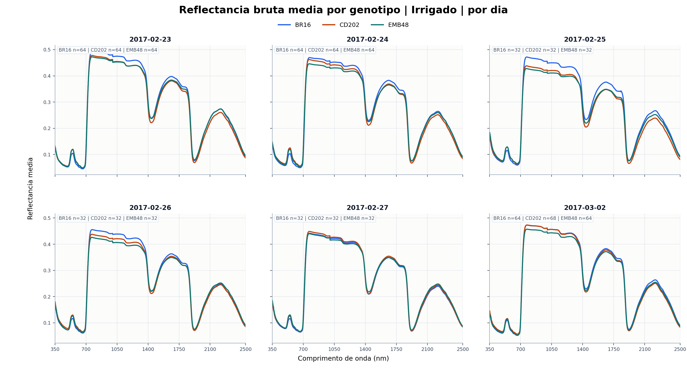
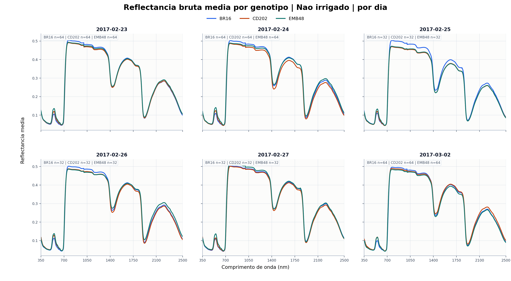
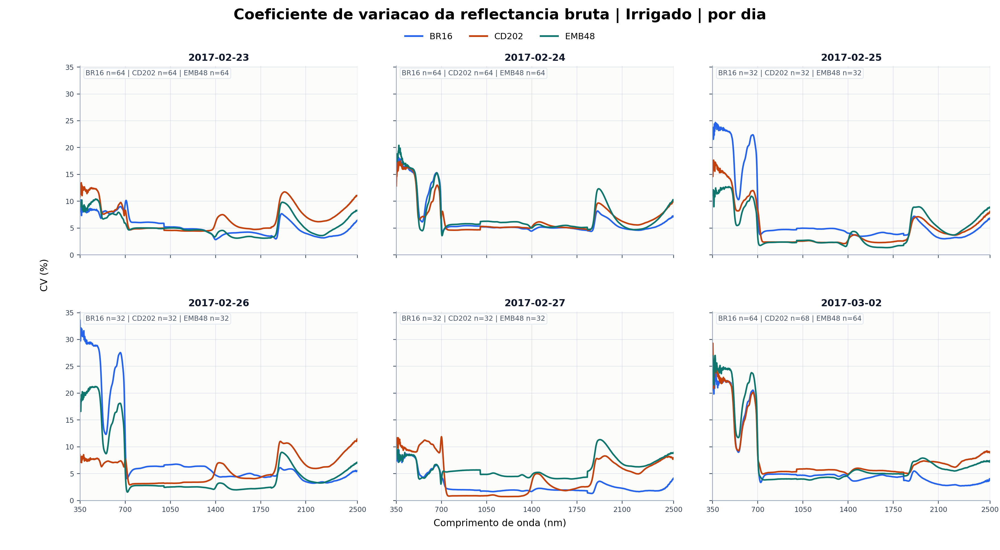
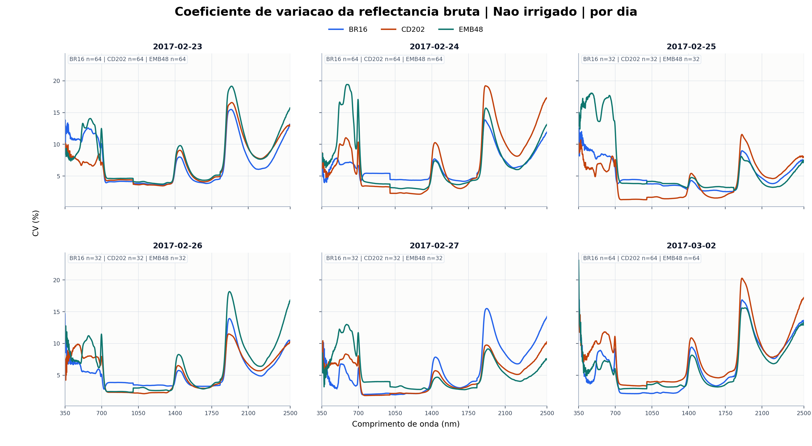
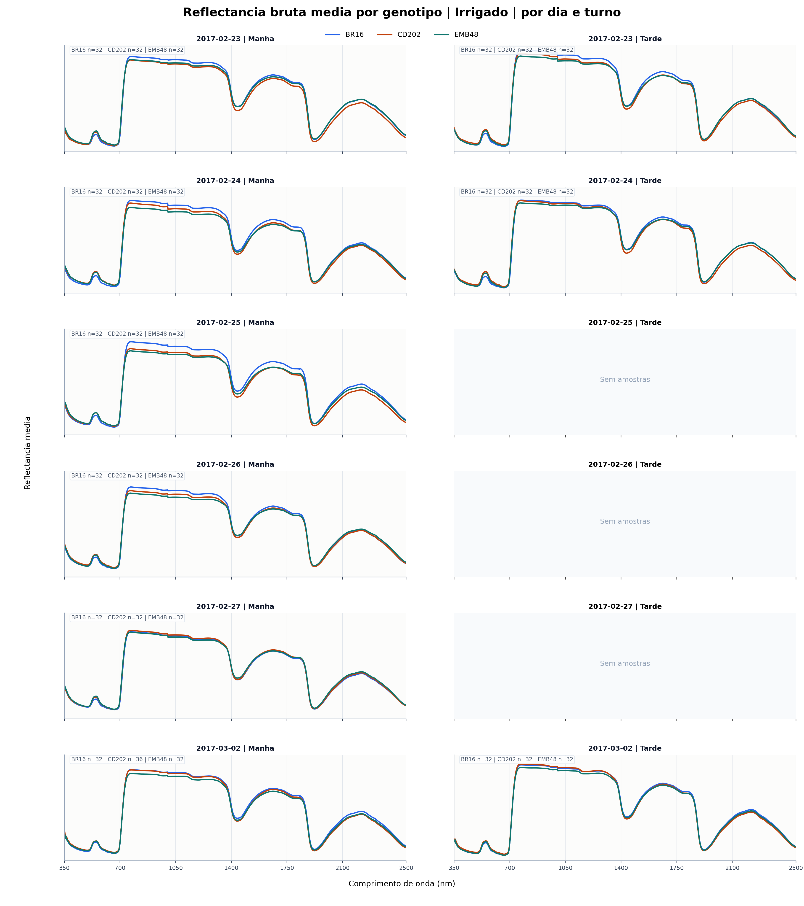
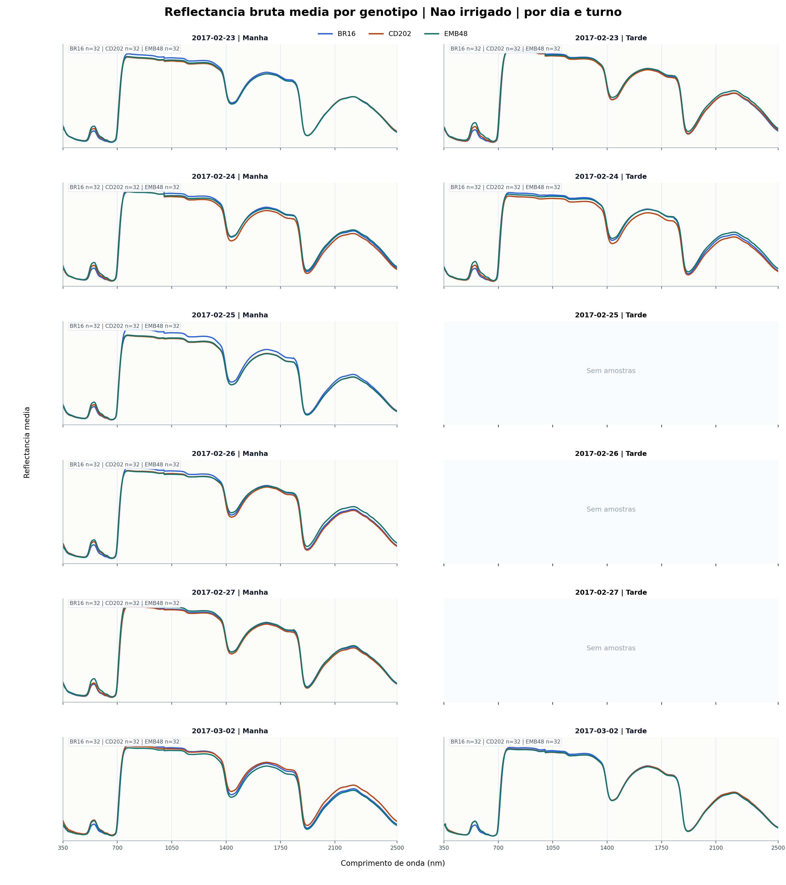
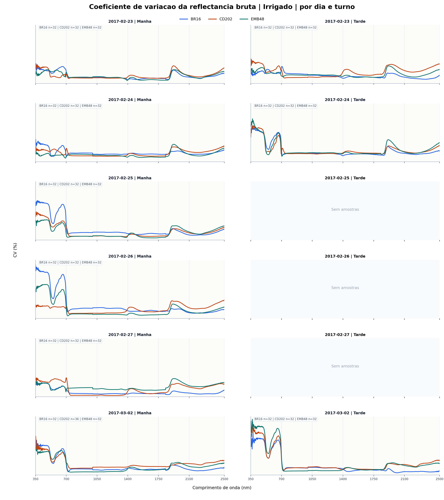
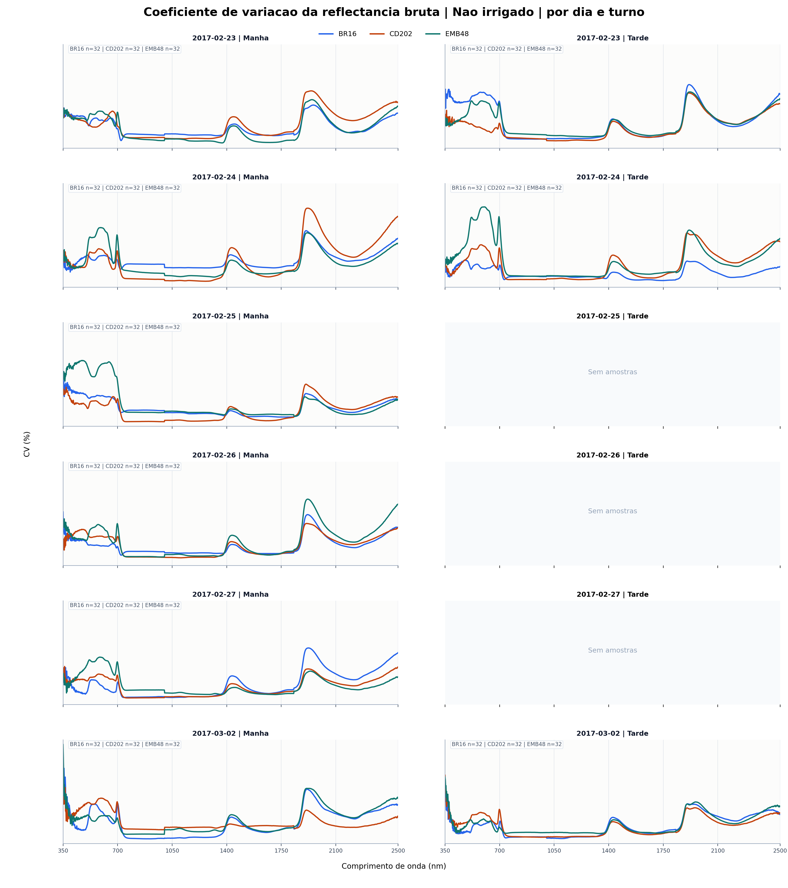

Reflectancia bruta por genotipo
Figuras separadas por condicao de irrigacao, com media e coeficiente de variacao por dia e por dia x turno.
media reflectancia bruta irrigado por dia
media_reflectancia_bruta_irrigado_por_dia.png
{kind=link}

media reflectancia bruta nao irrigado por dia
media_reflectancia_bruta_nao_irrigado_por_dia.png
{kind=link}

cv reflectancia bruta irrigado por dia
cv_reflectancia_bruta_irrigado_por_dia.png
{kind=link}

cv reflectancia bruta nao irrigado por dia
cv_reflectancia_bruta_nao_irrigado_por_dia.png
{kind=link}

media reflectancia bruta irrigado por dia turno
media_reflectancia_bruta_irrigado_por_dia_turno.png
{kind=link}

media reflectancia bruta nao irrigado por dia turno
media_reflectancia_bruta_nao_irrigado_por_dia_turno.png
{kind=link}

cv reflectancia bruta irrigado por dia turno
cv_reflectancia_bruta_irrigado_por_dia_turno.png
{kind=link}

cv reflectancia bruta nao irrigado por dia turno
cv_reflectancia_bruta_nao_irrigado_por_dia_turno.png
{kind=link}
